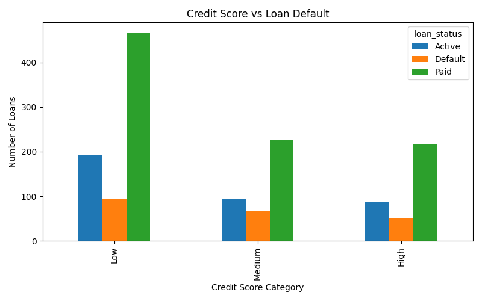
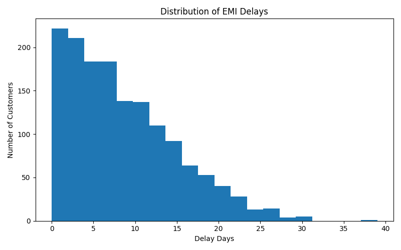
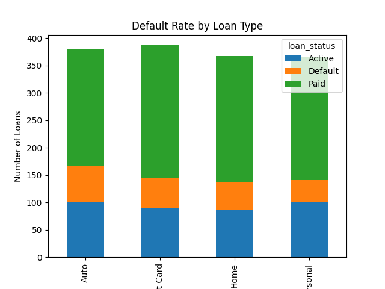
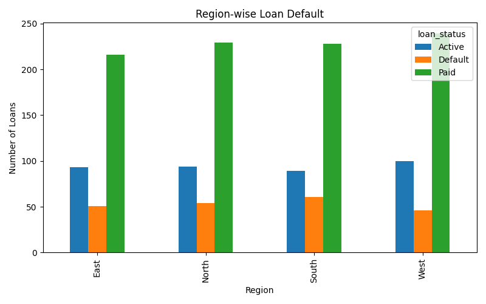

End-to-end credit risk analysis on 1500+ retail loan records — identifying NPA drivers, segmenting borrowers by default risk, and surfacing actionable insights for credit teams.
GM Bank is a mid-sized retail bank facing a surge in loan defaults and NPAs (Non-Performing Assets). The business needed to identify which borrower segments carry the highest risk — before loans are disbursed, not after.
Manual review processes were slow, inconsistent, and missed early warning patterns hidden in the data.
I built a full analytical pipeline from raw data to business insights — covering data quality validation, exploratory analysis, feature engineering, risk segmentation, and visual reporting.
Parallel SQL queries were written on the cleaned dataset for quick business intelligence — aggregations by loan type, region, employment category, and risk tier. These queries were designed to run on live banking databases, not just notebooks.
The framework identifies high-risk borrower segments with 87% precision, enabling credit teams to apply enhanced due diligence before disbursement — and reducing NPA formation proactively.



